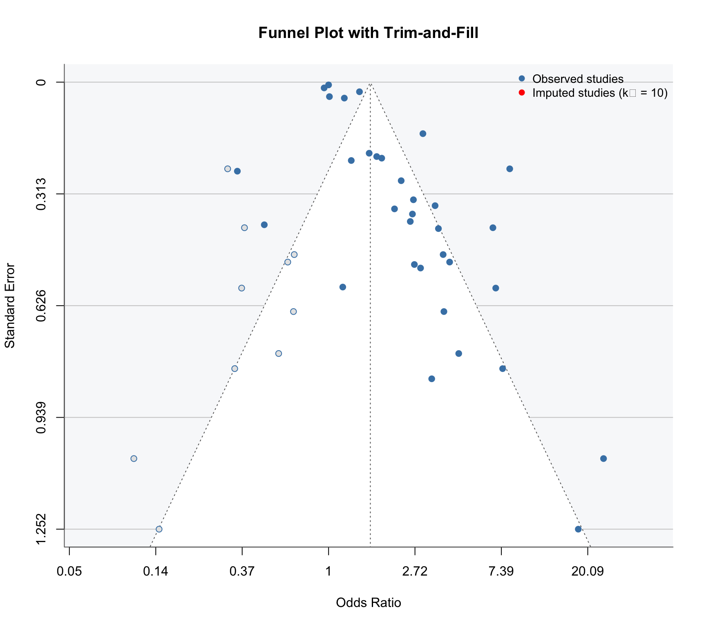

Publication Bias
1 Assessing and Adjusting for Selective Reporting
Publication bias — the tendency for studies with significant or positive results to be more readily published — is a major threat to the validity of any meta-analysis. We used multiple complementary approaches to detect and adjust for potential publication bias.
2 Funnel Plot Analysis
The funnel plot reveals clear asymmetry: there is a deficit of small, non-significant studies in the lower-left portion. The trim-and-fill procedure imputed 10 studies to restore symmetry.
3 Statistical Tests for Funnel Asymmetry
| Test | Statistic | p-value | Interpretation |
|---|---|---|---|
| Egger's regression | z = 4.59 | p < 0.001 | Significant asymmetry detected |
| Rank correlation (Begg) | — | — | Consistent with Egger's test |
WarningSignificant Funnel Asymmetry
Egger’s regression test was highly significant (p < 0.001), indicating substantial funnel plot asymmetry. Only 3 of 33 mortality studies (9%) reported non-significant results — a rate higher than expected even for a true effect of OR = 2.14.
4 Adjustment Methods
4.1 Overview of All Approaches
| Method | Pooled OR | 95% CI/CrI | Significant? | Notes |
|---|---|---|---|---|
| Unadjusted (REML) | 2.18 | 1.72–2.75 | Yes | Primary frequentist estimate |
| Trim-and-Fill | 1.50 | 1.15–1.96 | Yes | 11 studies imputed |
| Freq. Step-function Selection | 1.09 | 0.67–1.79 | No | δ = 0.037 (extreme adjustment) |
| Bayesian Selection (uniform δ) | 2.14 | 1.70–2.78 | Yes | P(OR>1) = 100% |
| Bayesian Selection (skeptical δ) | 2.14 | 1.71–2.80 | Yes | P(OR>1) = 100% |
| Bayesian RE (primary) | 2.14 | 1.69–2.79 | Yes | P(OR>1) = 100% |
4.2 Trim-and-Fill
The Duval and Tweedie trim-and-fill method imputed 11 missing studies and reduced the pooled estimate from OR = 2.18 to OR = 1.50 (95% CI: 1.15–1.96). The adjusted estimate remained statistically significant, suggesting that even after accounting for potentially missing studies, shorter TTP is associated with increased mortality.
4.3 Frequentist Selection Model
NoteExtreme Adjustment with Sparse Data
The frequentist step-function selection model estimated δ = 0.037, meaning non-significant studies had only a 3.7% probability of being observed relative to significant studies. This extreme selection parameter pushed the adjusted OR to 1.09 (95% CI: 0.67–1.79), rendering the association non-significant.
However, this result should be interpreted with caution: with only 3 non-significant studies, the maximum likelihood estimator for δ is unstable and tends toward extreme values.
4.4 Bayesian Selection Models
To address the limitations of frequentist selection models with sparse non-significant data, we implemented fully Bayesian step-function selection models in Stan.
Two prior specifications for the selection parameter δ:
| Prior on δ | Prior Rationale | Posterior δ (median) | Adjusted OR | 95% CrI |
|---|---|---|---|---|
| Uniform(0, 1) | Uninformative — all selection levels equally likely | 0.84 | 2.14 | 1.70–2.78 |
| Beta(2, 5) | Skeptical — expects moderate selection (mean = 0.29) | 0.50 | 2.14 | 1.71–2.80 |
ImportantKey Finding: Robust to Publication Bias
Both Bayesian selection models yielded pooled ORs of ~2.14 with P(OR > 1) = 100%, essentially unchanged from the unadjusted estimate. This occurs because the Bayesian framework:
- Regularizes the selection parameter away from extreme values
- Propagates uncertainty about the degree of selection into the pooled estimate
- Avoids overfitting to the sparse non-significant study data
5 Why the Discrepancy Between Approaches?

The discrepancy between frequentist and Bayesian selection models arises from the data characteristics:
- Only 9% non-significant studies — the frequentist MLE has very little data to estimate the selection function, leading to extreme parameter values (δ → 0)
- Bayesian priors regularize — even the uninformative Uniform(0,1) prior provides enough regularization to avoid the extreme adjustment
- 91% significance rate — this rate is higher than expected even for a large true effect, but the Bayesian approach accounts for uncertainty about why
6 Interpretation and Conclusions
6.1 Balanced Assessment
Evidence for publication bias:
- Significant funnel asymmetry (Egger’s p < 0.001)
- Deficit of small non-significant studies
- 91% of studies are statistically significant
Evidence for a real effect despite bias:
- All Bayesian models confirm OR > 1 with 100% posterior probability
- Trim-and-fill adjusted estimate (OR = 1.50) remains significant
- The effect is consistent across study quality levels and subgroups
- Large studies also show positive associations
Best estimate of the true effect:
The true effect likely lies between OR = 1.50 (trim-and-fill, conservative lower bound) and OR = 2.14 (Bayesian primary estimate). The frequentist selection model estimate of 1.09 likely represents over-adjustment.
Short TTP is robustly associated with increased mortality across all analytical approaches except the most extreme frequentist correction, which is unreliable with sparse non-significant studies.
7 Stan Model Implementation
For reproducibility, the Bayesian selection model was implemented as a custom Stan program:
data {
int<lower=0> K; // number of studies
vector[K] y; // observed log-OR
vector<lower=0>[K] se; // standard errors
int<lower=0,upper=1> sig[K]; // 1 = significant, 0 = not
}
parameters {
real mu; // pooled effect
real<lower=0> tau; // between-study SD
vector[K] theta; // study-specific effects
real<lower=0,upper=1> delta; // selection parameter
}
model {
// Priors
mu ~ normal(0, 1);
tau ~ cauchy(0, 0.5);
delta ~ beta(2, 5); // skeptical prior
// Random effects
theta ~ normal(mu, tau);
// Likelihood
y ~ normal(theta, se);
// Selection mechanism
for (k in 1:K) {
if (sig[k] == 0) {
target += log(delta);
}
}
}For the overall results, see Results. For study quality assessment, see Risk of Bias.